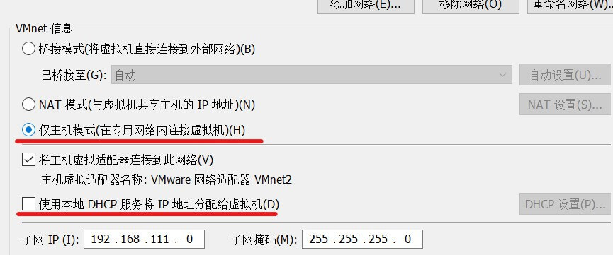
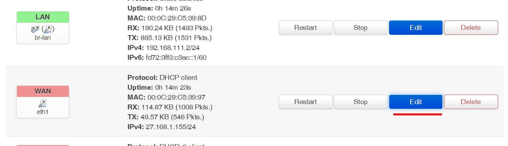
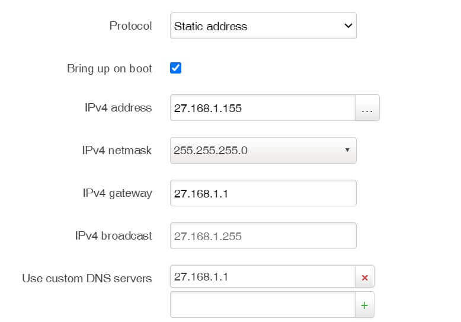

openwrt 的安装与配置
openWrt 是专门为嵌入式设备设计的 Linux 系统，常用来作为软路由系统使用。LEDE 和 openWrt 已经合并到一起。
最近研究软路由，所以先使用 VMware 虚拟机安装测试 openWrt，由于 VMware 只能识别 vmdk 格式的虚拟磁盘镜像，而官网下载的是 img 镜像，所以需要进行格式转换。
固件下载及转换
openWrt 固件也是区分不同硬件平台的，需要根据硬件情况下载对应的系统镜像。
官方固件下载地址：https://downloads.openwrt.org/
目前最新的版本是 19.07.4，我电脑是 x86 平台 64位系统需下载 x86_64 固件，进入列表下载 combined-ext4.img.gz 到本地:
将下载的压缩包解压出 img 镜像文件。由于我是虚拟机安装，所以需要将下载的 img 镜像转换为 VMware 的虚拟硬盘格式：.vmdk，最方便的是使用 Linux 工具 qemu-img 来完成，这里我是用 wsl 子系统来处理：
apt install qemu qemu-utils
qemu-img convert -f raw -O vmdk openwrt-19.07.4-x86-64-combined-ext4.img openwrt-19.07.4-x86-64-combined-ext4.vmdk完成后得到 vmdk 文件。
建立虚拟机
新建虚拟机，选择自定义模式：
硬件兼容选择最新的即可：
然后选择稍后安装操作系统：
系统选择 Linux 系统，19.07 版本是 4.14 内核，我下载的是 64 位固件，所以选择其他 Linux 4.x内核，64位：
虚拟机名称自己定义：
处理器默认即可：
内存分配1G：
剩下的全部默认确定即可，虚拟机初步建立完成。
下一步开始配置虚拟网卡用来分配给 openwrt 的 lan 内网网卡，点击编辑 - 虚拟网络编辑器：
点击右下角更改设置：
点击添加网络：
选择一个可用的网络点击确定，我选择 vnet2：
选择仅主机模式，由于 openwrt 自带 DHCP 控制所以这里取消勾选 DHCP 服务：

点击确认，完成虚拟网卡的建立，子网 IP 段是 192.168.111.0，子网掩码 255.255.255.0。
下面编辑刚才建立的虚拟机，点击编辑虚拟机设置：
移除不需要的硬件，包括硬盘，保留网络适配器。快捷键 alt + R：
将上面转换的 vmdk 文件拷贝到此虚拟机文件夹：
点击添加硬件：
选择硬盘，点击下一步：
选择使用现有虚拟磁盘：
选择刚才复制到目录的 vmdk 文件，点击完成：
选择转换：
再次添加一个网络适配器：
这里我们有了两个网络适配器，第一个分配给 lan 第二个分配给 wan，注意顺序，openWrt 默认识别第一个网卡为 lan。后期进入系统后也可以修改网卡顺序。
第一个网卡 lan 设置为我们刚才建立的虚拟网卡 vnet2，用来给 openWrt 路由的内网使用：
第二个网卡 wan 设置为桥接模式，用来连接物理外网：
确认后启动虚拟机，等待进入进入系统。进入系统后可以设置一个快照方便以后恢复。
网络配置
进入系统后，我们需要设置 lan 的 IP 地址为我们创建的虚拟网卡所在的 IP 段，就能从主机访问 openwrt 了。
首先通过 ip l 命令查看当前安装的网卡名称：
1: lo: <LOOPBACK,UP,LOWER_UP> mtu 65536 qdisc noqueue state UNKNOWN qlen 1000
link/loopback 00:00:00:00:00:00 brd 00:00:00:00:00:00
2: eth0: <BROADCAST,MULTICAST,UP,LOWER_UP> mtu 1500 qdisc fq_codel state UP qlen 1000
link/ether 00:0c:29:c5:39:8d brd ff:ff:ff:ff:ff:ff
3: eth1: <BROADCAST,MULTICAST,UP,LOWER_UP> mtu 1500 qdisc fq_codel state UP qlen 1000
link/ether 00:0c:29:c5:39:97 brd ff:ff:ff:ff:ff:ff可以看到除了 lo 本地网络外，有两个网卡 eth0 和 eth1，分别对应第一个网卡和第二个网卡。
下面我们编辑 /etc/config/network 配置文件，默认配置文件如下：
这里我们需要关闭网桥模式(用 #井号 屏蔽)，然后修改 lan 段里的 ipaddr 地址为虚拟网卡网段。我们这里修改为 192.168.111.2:
修改完成后 reboot 系统。
重启完成后使用 ip addr 查看系统网络配置，可以看到 wan 口 eth1 分配到主机网络所在局域网 IP 地址，lan 口 eth0 是虚拟网卡 IP 地址：
使用 ping 查看是否可以连接外网：
如果无法 ping 通，则需要检查配置问题。
主机网络适配器里找到 vnet 2 虚拟网卡：
查看信息，ip 地址是否正确，注意如果 openwrt 里的 IP 设置为了 192.168.111.1，则这里的IPv4 地址就需要修改为其他地址了，不然就冲突了：
这时候使用主机访问 192.168.111.2 应该就可以进入 LuCl 界面了：
默认没有密码，可以使用 passwd 设置登录密码。
我们先给 openWrt 设置一个静态 wan 口 Ip，这样局域网设备就可以方便访问了。点击 network - interface：
wan 口配置点击 edit：

protocol 选择 static address，点击 switch protocol：
设置本地局域网内的 IP 地址，网关地址和 DNS 地址，点击保存：

点击 save：
更换国内源
由于虚拟机内不方便复制粘贴文本，我们使用 ssh 连接虚拟机：
类似于 Debian，openWrt 也有包管理系统 opkg。默认都是国外源地址访问比较慢，可以替换为国内镜像地址，这里使用清华园镜像：https://mirrors.tuna.tsinghua.edu.cn/help/openwrt/
列表路径是：/etc/opkg/，有两个 conf 文件：distfeeds.conf, customfeeds.conf
一键替换命令：
sed -i 's_downloads.openwrt.org_mirrors.tuna.tsinghua.edu.cn/openwrt_' /etc/opkg/distfeeds.conf
更新列表：
opkg update
安装常用工具：
opkg install git-http vim-full curl ca-certificates ca-bundle libopenssl luci-ssl-openssl lsof wget ipset
虚拟机下可以安装 vmtools 来开启虚拟机管理等功能：
opkg install open-vm-tools
可以安装中文 luci 语言包：
opkg luci-i18n-base-zh-cn
自带的 dnsmasq 是精简版的不支持一些高级语法，可以参考我的文章升级为 dnsmasq-full：https://blog.niekun.net/archives/1869.html
如果需要进行透明代理，需要安装 iptables 的 tproxy 扩展：
opkg install iptables-mod-tproxy iptables-mod-extra
iptables 的操作教程参考：https://blog.niekun.net/archives/1872.html
需要 sftp 连接系统的话需要安装支持包：
opkg install openssh-sftp-server
如果需要打开网络发现，这样其他设备就可以主动找到此服务器，可以安装扩展：
opkg install announce
如果安装了 openssh-sftp-server 就会在网络上声明此 sftp 服务的存在。
也可以直接安装下载好的 ipk 包：
opkg install test.ipk
使用第三方源
使用第三方源步骤：
- 添加 第三方源 key 文件
- 源仓库地址加入
/etc/opkg/customfeeds.conf文件 - opkg update
源仓库地址格式：
src/gz example_feed_name http://www.example.com/path/to/files
示例，加入第三方开发者 kuoruan 的源：
添加 key：
wget -O kuoruan-public.key http://openwrt.kuoruan.net/packages/public.key
opkg-key add kuoruan-public.key添加仓库地址到配置文件：
echo "src/gz kuoruan_packages http://openwrt.kuoruan.net/packages/releases/$(. /etc/openwrt_release ; echo $DISTRIB_ARCH)" \
>> /etc/opkg/customfeeds.conf
opkg update然后就可以安装第三方库的软件了，例如：
opkg install v2ray-core
外网访问
默认设置下，openwrt 会禁止 wan 网络对主机的 INPUT 和 FORWARD 流量，只会转发信息给其他设备。这样是为了安全因素。
如果需要通过 wan 口的网络访问 luci 管理页面，或者远程 ssh 访问 openwrt，就需要打开防火墙设置。如果要彻底关闭防火墙，可以进入 network - firewall - general settings，编辑下面的 zone 中的 wan 设置：
将 input，output，forward 都设置为 accept：
这样就会完全开放网络的访问，也可以根据需要只开放指定的端口或服务。
这样就可以通过 wan 口访问 openwrt 本地服务了。但是为了安全期间，请设置强度高的 root 密码。
注意通过我的测试，无法使用 frp 的内网穿透访问 luci 界面，会一直进入 307 重定向死循环导致网页卡死。具体原因未知。配置 ssh 远程访问正常。
参考链接：
https://openwrt.org/docs/guide-user/virtualization/vmware
https://github.com/kuoruan/luci-app-v2ray